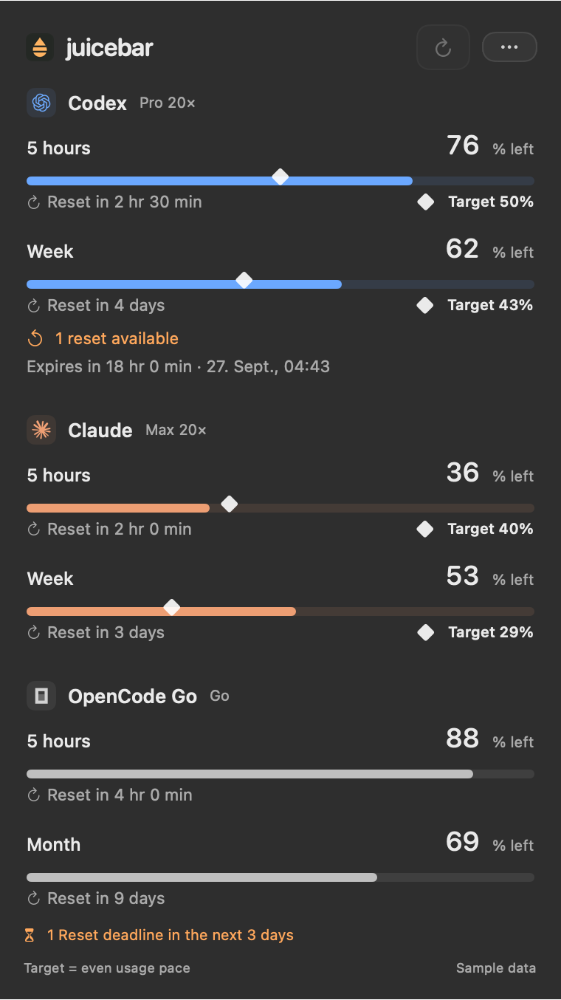
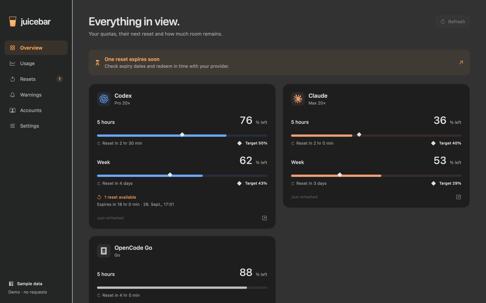
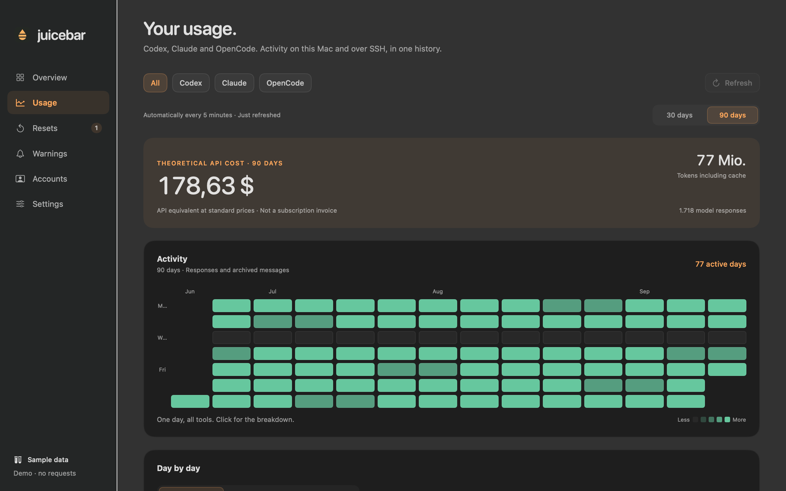

Know
what’s left.
Codex. Claude. OpenCode.
Your limits together, with a heads-up before you run dry.
Apple Silicon · macOS 14 or later
Free · Version 0.1.7 · Signed & notarized

App preview, sample data. System icons illustrated.
Limits and reset times.
The bars drain as you work. The diamond shows where an even usage pace would put you. Choose which limits belong in your menu bar, without a row of names and percentages.
Set a usage threshold, a pace warning or a forecast window. Get a reminder when a banked reset is about to expire, where your provider reports that date.

Usage and API costs.
Daily charts and an activity calendar bring Codex, Claude and OpenCode logs together. Add an existing SSH host to include work on another computer.
See the theoretical API value of your token usage, with cache pricing and clear coverage when a model has no known price. It is an estimate, never a subscription bill.

Your data stays on your Mac.
- No conversation archive
- Juicebars reads local logs to extract usage metadata. It does not store or upload your prompts and responses.
- Direct provider connections
- Your existing CLI sign-ins and keys stay on your Mac. Requests go to the provider concerned, without a Juicebars server in between.
- Updates without a paywall
- The app and its updates are free. Check for new versions automatically and install them through the built-in updater. Contributions support continued maintenance.
Juicebars for Mac.
Download for MacApple Silicon · macOS 14 or later
All downloads